As the product ecosystem expanded, Norsesight needed a cohesive brand identity that connected the main brand with its sub-brands while allowing each product to maintain its own distinct character. My work focused on developing this brand system, redesigning the existing dashboard, and creating a 3D command panel to bring the overall experience together.
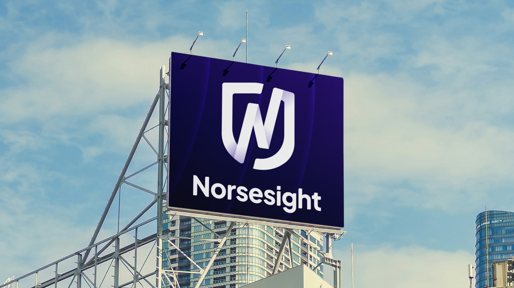
About
Norsesight is a cybersecurity platform with a growing product ecosystem, featuring Aigis (SOAR), Enigma (SIEM), and Omni (XDR). Its dashboard serves as a centralized workspace, bringing together the tools and capabilities needed to manage cybersecurity operations.
Impact
✦ Developed a cohesive brand identity system across four logos: Norsesight and its three sub-brands, Aigis, Enigma, and OmniXDR.
✦ Using 3D line illustration style to redesign the existing dashboard & landing page.
✦ Helped establish the product's first trial engagement with a decacorn company.
Norsesight Was Growing, But Its Brand Identity Wasn't Growing With It
Norsesight initially had only one logo to represent the company, with no separate identities for its products. At that time, Aigis was its only product. However, as the company grew, new products were introduced, including Enigma (SIEM) and Omni (XDR).
Since all products shared the same brand identity, it became difficult to give each product its own character and recognition. People knew Norsesight as a company, but its individual products didn't have strong identities of their own.
I saw an opportunity to create a sub-brand system, where each product could have its own identity while still being connected to the main Norsesight brand, similar to how Atlassian manages products like Jira and Confluence.
Improving the Product Experience Meant Rethinking the Brand
With the initial goal of improving the platform's overall design language. Before I joined, most of the existing interfaces were created using AI-generated designs by the founder and developers. While they provided a starting point, the platform needed a more consistent visual direction and a better user experience.
I started with the company landing page, as it was the main touchpoint for potential clients to learn about Norsesight and its products. This became an opportunity to rethink how the company presented itself, not only through its website but also through its overall brand identity.
As the project grew, my role expanded beyond product design. I worked on developing the brand identity and sub-brand system, redesigning the dashboard, and creating a custom 3D command panel. My focus was to bring everything together into a more consistent experience, both visually and functionally.
Rethinking the Brand, Building a Connected Product Experience
Before jumping into the visual design, I wanted to understand how Norsesight could grow as a brand while keeping its products connected. The goal is to build a visual system that could work across the company and its growing product ecosystem.
Establishing the Brand Structure
I began by defining the relationship between Norsesight and its products. I proposed a sub-brand structure where Norsesight would remain the main brand, while Aigis, Enigma, and Omni would each have their own identity.
Exploring the Logo Direction
I started exploring different logo directions by looking at the keyword "Security", which became the foundation of the visual concept. Norsesight already had an existing logo featuring the letter "N" inside a shield shape, so I decided to use that as the starting point for the new brand family.
Inspired by the existing logo, I explored different shield shapes, proportions, curves, and structures to create simple and recognizable marks for each product. This allowed me to give every product its own character while maintaining a consistent visual style across the entire brand family.
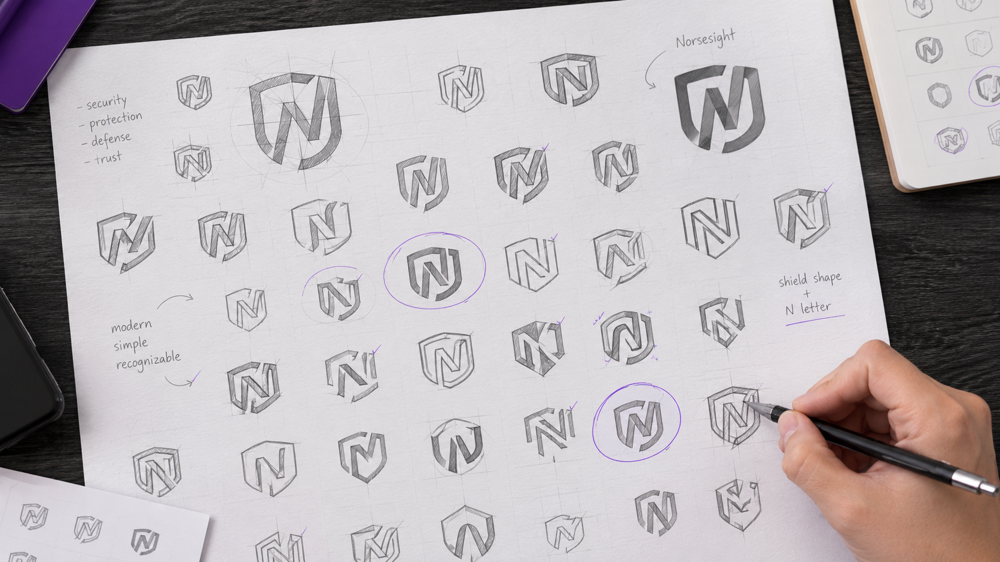
Let Me Do the Magic
I developed the logos using Affinity Designer, applying the Golden Ratio technique to guide the proportions and construction of each shape. This helped me create balanced forms with consistent curves and proportions across the logo family.
I used geometric guides and circles to refine each symbol, making sure every element felt well-balanced while keeping the shield concept consistent throughout the brand identity.
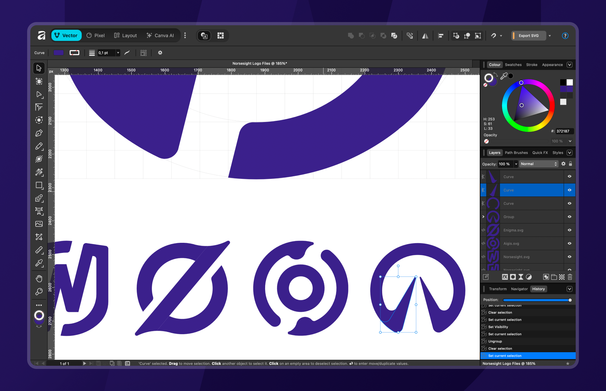
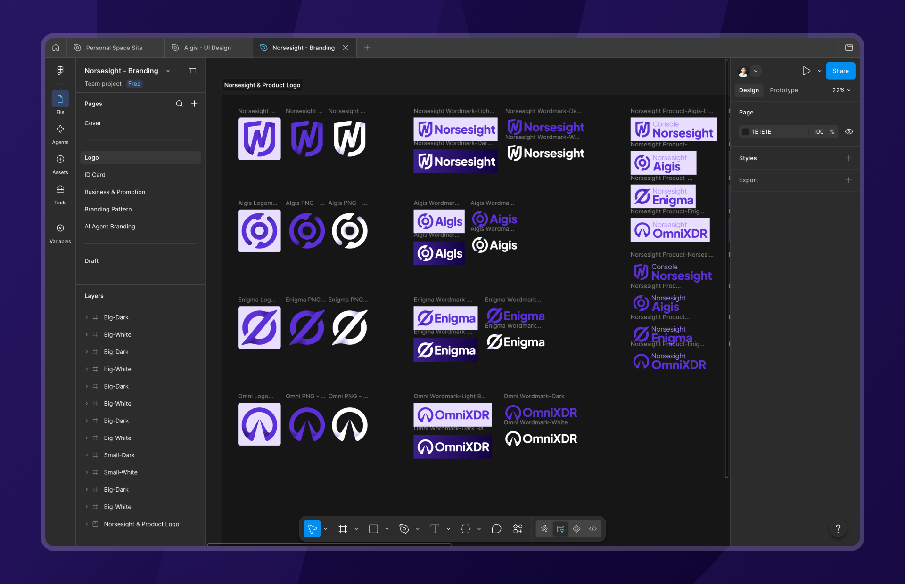
The Final Shape
Each logo has its own symbol and character, while sharing the shield-inspired concept and consistent visual style. The final result gives every product a recognizable identity and creates a stronger connection across the entire Norsesight brand family.
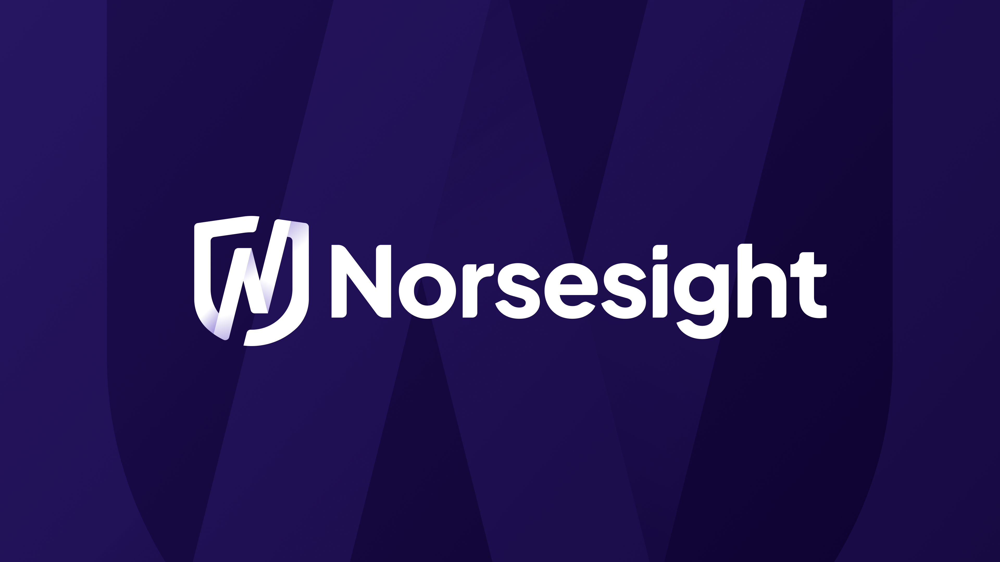
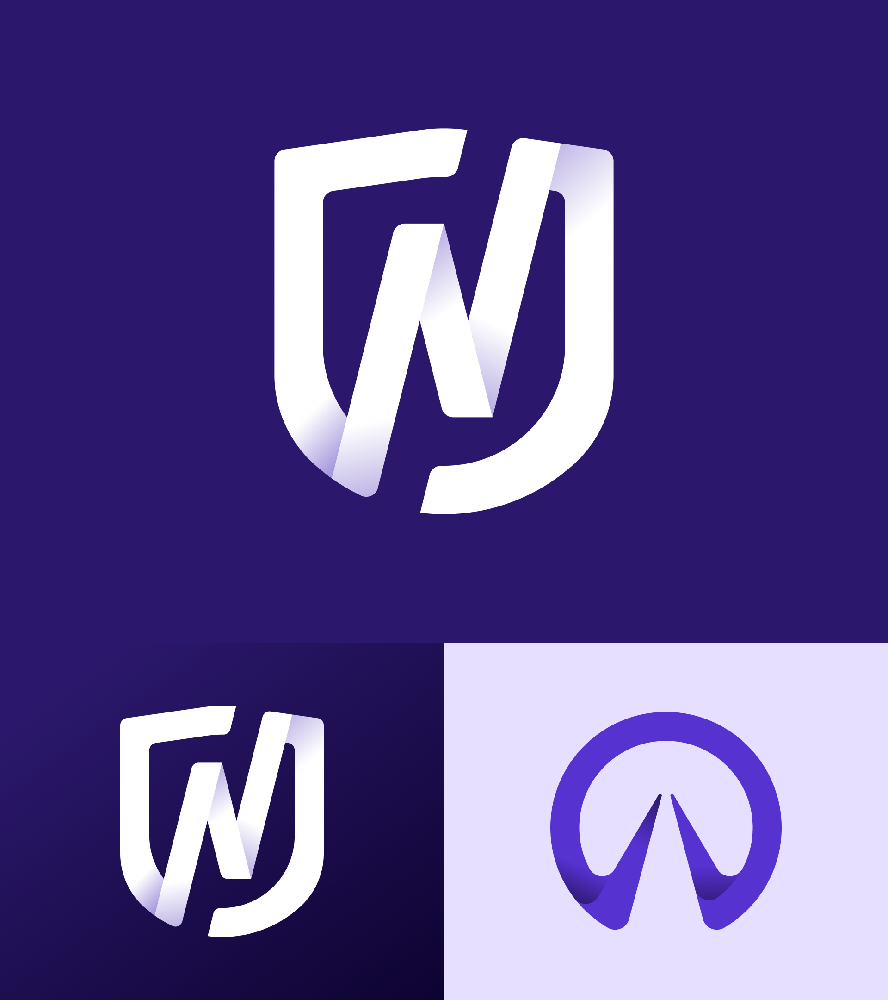
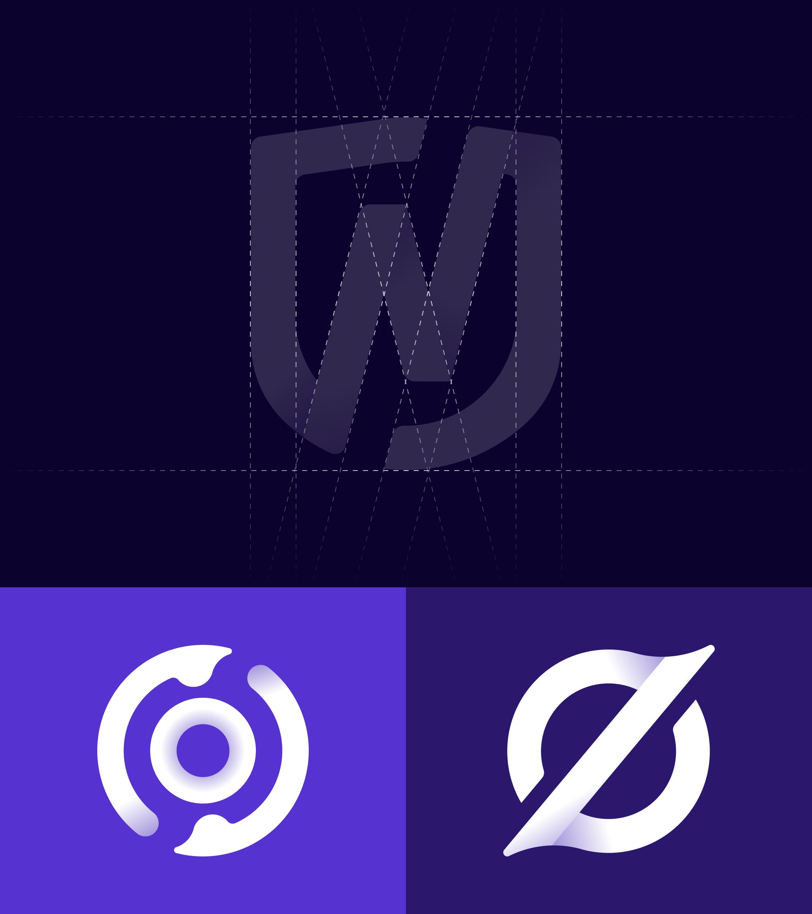
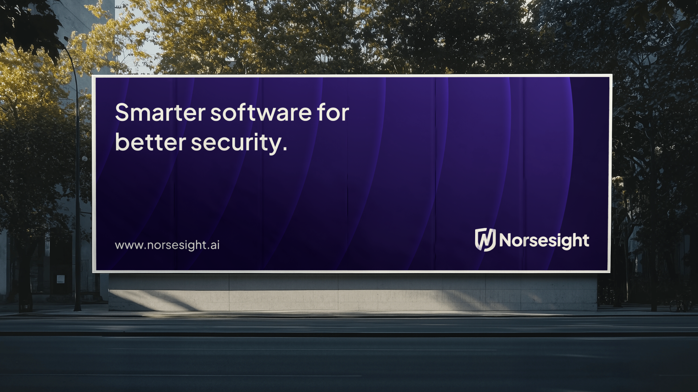
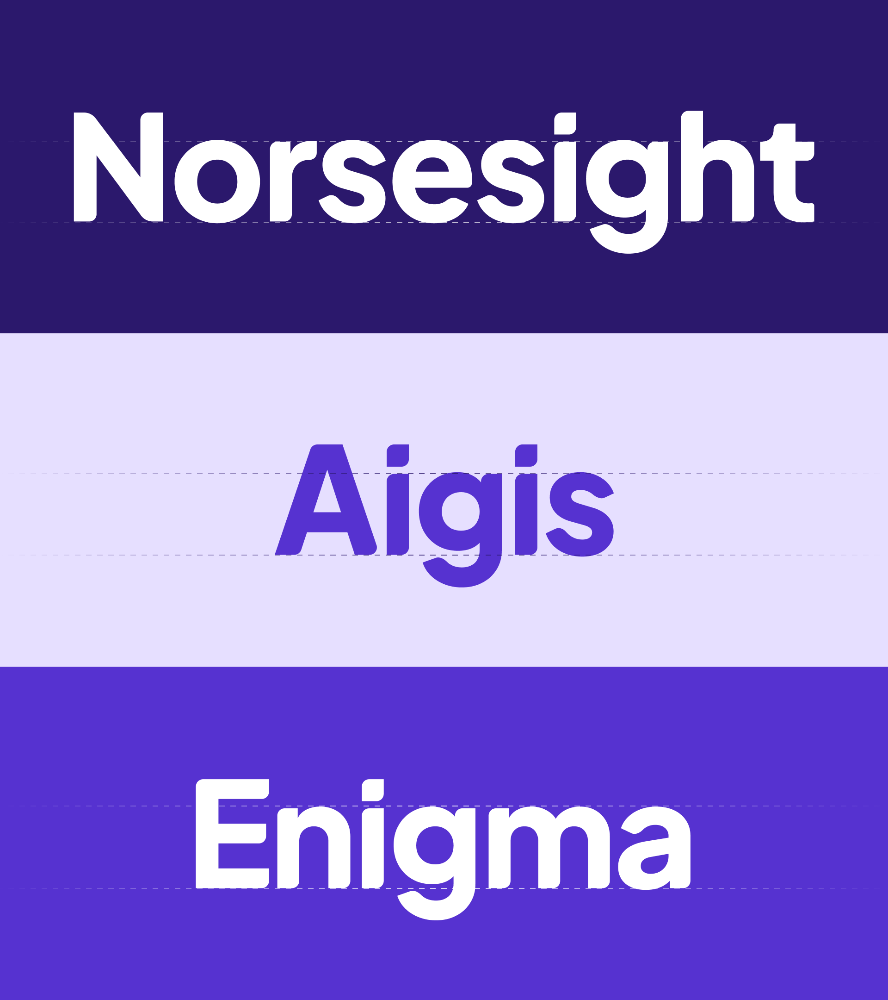
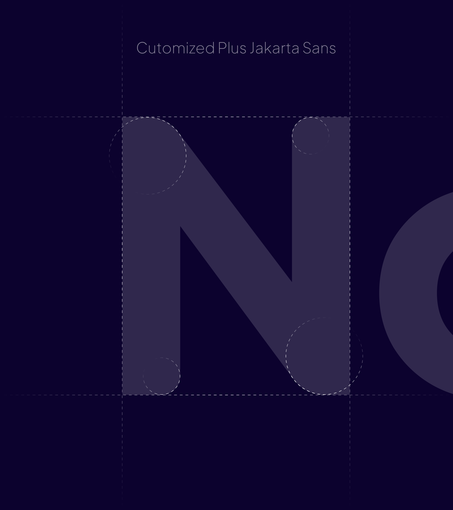
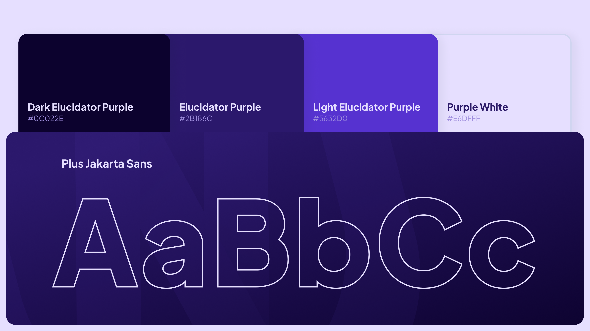
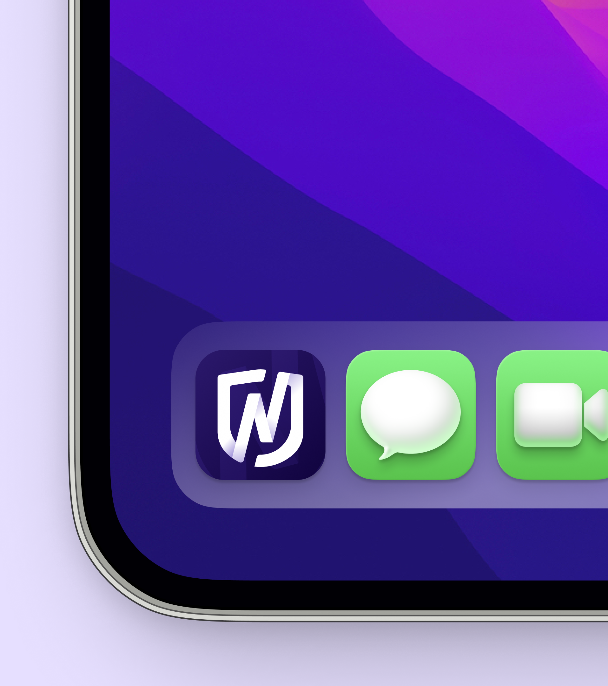
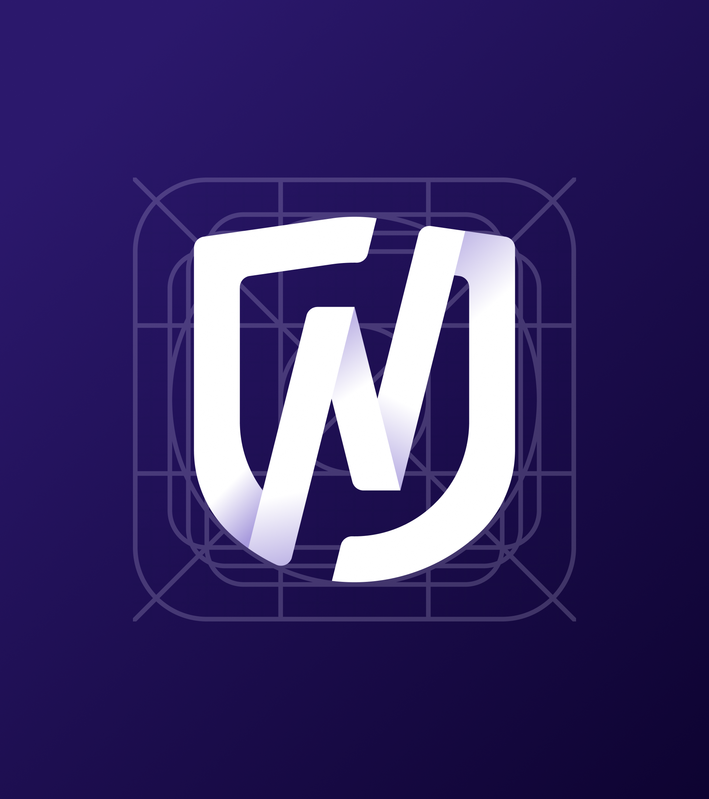
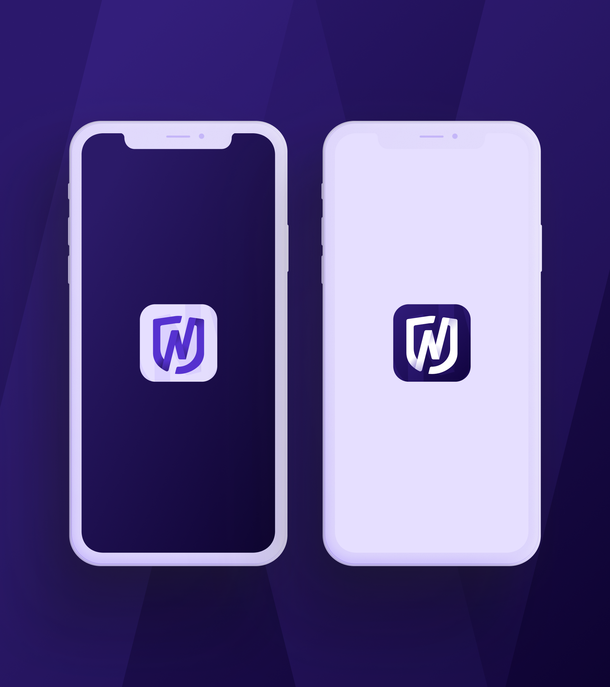
New Design Language on Interface
The initial interface had a strong AI-generated look, with limited visual consistency and a design language that lacked its own character. I saw an opportunity to give the platform a more defined visual direction that better reflected Norsesight as a cybersecurity company.
I introduced a grid-based layout to create more structure and consistency across the interface. I also added custom 3D line-style illustrations inspired by technology and cybersecurity elements, bringing more depth and a stronger visual identity to the overall experience.
These changes helped shape a more cohesive interface, giving Norsesight a visual language that feels more intentional and aligned with its identity as a cybersecurity platform.
What I learned
✦ Looking at the Whole Picture, Working on this taught me that product design goes beyond UI. I learned how branding and visual identity can shape the way people experience a product.
✦ Building a Connected Ecosystem, Designing identities for multiple products helped me understand how to create consistency across a brand while giving each product its own character.
✦ Growing Beyond My Role, This project pushed me to explore new areas of design, from branding and visual exploration to product interfaces. It helped me become more confident in taking on a broader design role.
I’m the kind of person who has a lot of interests.
Japanese things, Dota2, Formula 1, and a bowl of Indomie Ayam Bawang.
Holds a Computer Science degree from Binus University. Combining tech and design expertise to validate ideas and develop innovative products. よろしくお願いします。